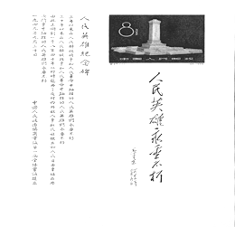
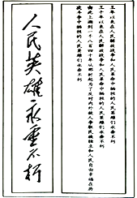
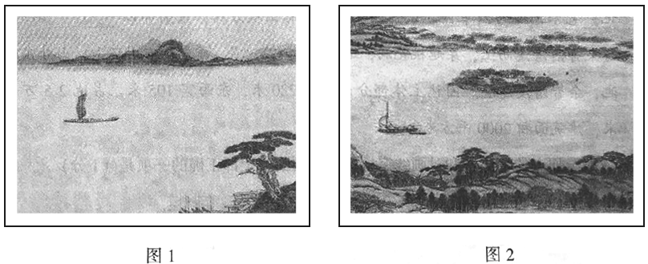

2018年北京市中考语文试题 原卷解析
北京市2018年中考语文真题试题
考生须知：
1．本试卷共12页，共五道大题，25道小题，满分100分。考试时间150分钟。
2．在试卷和草稿纸上准确填写姓名、准考证号、考场号和座位号。
3．试题答案一律填涂或书写在答题卡上，在试卷上作答无效。
4．在答题卡上，选择题用2B铅笔作答，其他试题用黑色字迹签字笔作答。
5. 考试结東，将本试卷、答题卡卡和草稿纸一并交回。
一、基础·运用
学校在圆明园举行“牢记历史，缅怀先烈”主题活动。请根据要求，完成下面小题。
1. 圆明园曾有著名的“四十景”，它们的命名多富有浓厚的传统文化意味。其中，“上下天光”一景的命名就出自北宋文学家____________的《岳阳楼记》。
【答案】范仲淹
【解析】考查文学常识。此题根据《岳阳楼记》，这篇文章是名篇，确定作者不难。注意“淹”字要写正确。
2. 下面是圆明园中“武陵春色遗址”景观说明牌上的文字。阅读这段文字，完成（1)（2）题。
武陵春色，圆明园四十景之一，建自康熙朝后叶，是一处摹自陶渊明《桃花源记》艺术意境的园中园。该景园林植物号称山桃万株，东南部以 ① 石为胜，可乘舟沿清溪而上，穿越桃花洞，进入“ ② ”。该景群四周环山，山外东临巨池，余皆清溪环绕。园林主体部分南北长220米，东西宽105米，占地2.5万平方米，建筑面积2000平方米。
（1）给加点的字注音和对画线字笔顺作出判断，全都正确的一项是（_____）
A.摹（mú） “巨”字的笔顺是：
B．摹（mú） “巨”字的笔顺是：
C．摹（mò） “巨”字的笔顺是：
D．摹（mó） “巨”字的笔顺是：
（2）结合语境，在这段文字横线处填入的汉字和词语，全都正确的一项是（_____）
A．①叠 ②世外桃源 B．①迭 ②洞天胜境
C．①迭 ②世外桃源 D．①叠 ②洞天胜境
【答案】 (1). D (2). A
【解析】考查对汉字书写笔顺和汉字字音字形词语的理解。“摹”只有一个读音“mó”，“巨”字笔画顺序：横、竖折、横折、横。“迭”指交换，轮流；屡次，连着。“叠”指重复，累积。根据“清溪”“桃花”应与“世外桃源”对应。
3. 在圆明园大水法遗址前，学生会主席准备给同学们讲述圆明园被英法联军毁灭的历史。阅读他的发言稿，完成（1）（2）题。
第二次鸦片战争期间，英法联军攻入北京，闯进圆明园。他们被园内琳琅满的珍宝震惊了，争先恐后，大肆抢夺。园内能拿走的东西，他们统统掠走【甲】实在运不走的，他们就疯狂打砸。据粗略统计，被掠夺的文物【乙】上至先秦下至清朝的各种奇珍异宝有100多万件。为了销毁罪证，侵略者纵火焚烧圆明园。大火烧了三天三夜，往日辉煌的宫殿、参天的古树，都化为灰。就这样，英法联军连抢带砸，使圆明园遭受了毁灭性的破坏。
（1）在【甲】【乙】两处分别填入标点符号，最恰当的一项是（_____）。
A.【甲】分号 【乙】冒号 B．【甲】分号 【乙】破折号
C．【甲】逗号 【乙】冒号 D．【甲】逗号 【乙】破折号
（2）画线的句子作为这段文字的总结句，有一处表达欠妥，请你加以修改。
修改_____________________
【答案】 (1). B (2). 就这样英法联军连抢带砸的行为，使圆明园遭受了毁灭性的破坏。
【解析】考查对表达符号和句子语病的辨析。“园内能拿走的东西”与“实在运不走的”是两个方面，故而用分号隔开。此句成分残缺，在“连抢带砸”后加上“的行为”，另外“毁灭性的破”应改为“毁灭性的破坏”。
4. 同学们看到了陈列在圆明园展览馆里的“雨果的一封信”。下面是这封信中的部分内容，请你阅读这段文字，完成（1）（2）题。
在世界的某个角落，有一个世界奇迹。这个奇迹叫圆明园。
……
这个奇迹已经消失了。
有一天，两个强盗闯进了圆明园。一个强盗洗劫，另一个强盗放火。似乎得胜之后，便可以动手行窃了。他们对圆明园进行了大规模的劫掠，赃物由两个胜利者均分。……我们们所有大教堂的财宝加在一起，也许还抵不上东方这座了不起的富丽堂皇的博物馆。那儿不仅仅有艺术珍品，还有大堆的金银制品。丰功伟绩！收获巨大！两个胜利者，一个塞满了腰包，这是看得见的，另一个装满了箱箧。他们手挽手，笑嘻嘻地回到了欧洲。这就是这两个强盗的故事。
（1）这封信的作者雨果是十九世纪_________国著名作家，代表作有《_________》 。
（2）看过这封信，同学们纷纷在微信群里发表感想。下面是四位同学分别写下的感受，其中修辞方法或词语使用不恰当的一项是（_____）
A．烧名园，掠珍宝，恬不知耻两强盗；作书信，斥罪行，仗义执言一作家。
B．面对焚烧圆明园的卑劣行径，雨果没有一点奴颜媚骨，表现了凛然正气。
C．读过雨果的这封信，我们仿佛仍能感受到圆明园在哭泣，在流血，在控诉。
D．圆明园遗址是侵略者给我们留下的课堂，它让我们永远铭记历史，勿忘国耻
【答案】 (1). 法 (2). 悲惨世界 (3). B
【解析】考查文学常识。（1）本题考查学生对课外阅读的掌握情况，对名著的了解。培养学生的大语文观。以考促读。做这种题，熟读原作品，记住重点情节及人物的特征。相似人名注意不要记乱，必要时死记硬背。阅读名著除了识记文学常识，还要对涉及主要人物的精彩片段反复阅读，从而形成自己的阅读体验。死记硬背作者名字、书名及书中的重要人物的名字。此题考查的是与雨果有关的文学常识。第一二个空需要学生的记忆。第三个空，这封信雨果愤怒谴责侵略者的强盗行径，B项中“没有一点奴颜媚骨，表现了凛然正气”解说不对。
5. 当活动进行到“缅怀先烈”的环节时，校团委书记拿出了一枚珍藏的《人民英雄纪念碑》小全张①，与同学们共同缅怀自鸦片战争以来为民族解放而牺牲的先烈。下面对小全张中的的题词和碑文的理解，都正确的一项是（ ）


A. 题词的字体属于楷书，端正典雅；碑文内容由远及近，缅怀了自1840年以来各个历史阶段牺牲的人民英雄，表达了对他们的敬仰之情。
B. 题词具有行书的特点，刚劲有力；碑文内容由远及近，缅怀了自1840年以来各个历史阶段牺牲的人民英雄，表达了对他们的敬仰之情。
C. 题词的字体属于楷书，端正典雅；碑文内容由近及远，细怀了自1840年以来各个历史阶段牺牲的人民英雄，表达了对他们的敬仰之情。
D. 题词具有行书的特点，刚劲有力；碑文内容由近及远，细怀了自1840年以来各个历史阶段牺牲的人民英雄雄，表达了对他们的敬仰之情。
注：①［ 《人民英雄纪念碑》小全张］为纪念人民英雄纪念碑建成而发行的小全张。小全张右上方主图是人民英雄纪念碑的正面全景，主图下是镌刻在纪念碑正面的毛泽东的题词，左面是刻在纪念碑背面的由周恩来书写的碑文。
【答案】D
【解析】题词“人民英雄永垂不朽”不是楷书，具有行书的特点，排除AC两项，碑文内容“三年以来，三十年以来，由此上溯到一千八百四十年”是由近及远，排除B项，故选D。
二、古诗文读
（一）默写。
6. （1）万里赴戎机，____________。____________，寒光照铁衣。（ 《木兰诗》 ）
（2）青树翠蔓，____________，____________。（柳宗元《小石潭记》 ）
【答案】 (1). 关山度若飞。 (2). 朔气传金柝 (3). 蒙络摇缀， (4). 参差披拂
【解析】默写常见的名句名篇。首先要选准诗句，生僻字平时要多写几遍。这类试题是通过书写的方式考背诵，关键是不能错字、别字、形似字。近几年总出理解性默写题目，这种题目的难度比根据上下文默写要难，首先要根据诗歌内容选准诗句，然后不要出现错别字。此题要注意“朔”“柝”“缀”“拂”等字词的书写。
点睛：古诗文的背诵、默写。能熟练的背诵并准确的默写，不出现错别字。对于一些理解性的背诵默写的诗句要理解原句，还要知道句子的象征意义，延伸意义，知道用于哪种意境之中。
（二）阅读《次北固山下》，完成下面小题。
次北固山下
王湾
客路青山外，行舟绿水前。
潮平两岸阔，风正一帆悬。
海日生残夜，江春入旧年。
乡书何处达？归雁洛阳边。
7. 这首诗表达了诗人的思乡之情。诗人离乡远游，来到北固山下，看到残夜未尽而旭日已经升起、旧年未逝而春意已经显现，生发了___________的感慨。他想托鸿雁捎一封家信到洛阳，问候家乡的亲人。
8. 阅读画线诗句，观察下面两幅图画，简要说明哪一幅能够表现这一联诗句所描绘的景象。

9. 这首诗描写了长江的风光。在我国古代诗词中，还有许多含“江”（长江）的诗句，其中，你读过的两句诗是“①____”和“②____”。（每句诗中允许有一个不会写的字用拼音替代）
【答案】7. 寄回家乡的书信何时才能送达。
8. 图一，描绘一幅潮水上涨，湖面与两岸齐平，孤舟悬帆与湖面之上的景象。正体现诗句“潮平两岸阔，风正一帆悬”中“潮平”“岸阔”“风正”“帆悬”的意象。而图二中的潮落、水浅、帆停的景象与原诗句不符，故选图一。
9. (1). 不尽长江滚滚流 (2). 日暮乡关何处是，烟波江上使人愁
【解析】
7. 该诗写冬末春初、作者舟泊北固山下时看到的两岸春景。先写青山重叠，小路蜿蜒，碧波荡漾，小船轻疾。“潮平两岸阔，风正一帆悬”描摹长江下游潮涨江阔，波涛滚滚，诗人扬帆东下的壮观，气概豪迈。“海日生残夜，江春入旧年”为历来传诵的名句，描绘了昼夜和冬春交替过程中的景象和心中的喜悦，由此而引动末句的乡思，以归雁传书表达了作者对家乡的思念，春景和乡思和谐交融。
8. 句中的“阔”表现长江水波激荡，春潮涌流，江水几与岸平，显得江面广阔浩渺。观察图一，画面写船行江中，帆正迎风飘扬。而图二则是水落石出，明显与诗句内容不符。
9. 考查对诗句的积累。只要写出的诗句包含“江”或与“长江”有关，书写不出现错字即可。
（三）阅读《出师表》（节选），完成下面小题。
侍中、侍郎郭攸之、费祎、董允等，此皆良实，志虑忠纯，是以先帝简拔以遗陛下。愚以为宮中之事，事无大小。悉以咨之，然后施行，必能裨补阙漏，有所广益。
将军向宠，性行淑均，晓畅军事，试用于昔日，先帝称之曰能，是以众议举宠为督。【甲】愚以为营中之事，悉以咨之，必能使行阵和睦，优劣得所。
亲贤臣，远小人，此先汉所以兴隆也；亲小人，远贤臣，此后汉所以倾颓也。【乙】先帝在时，每与臣论此事，未尝不叹息痛恨于桓、灵也。侍中、尚书、长史、参军，此悉贞良死节之臣，愿陛下亲之信之，别汉室之隆，可计日而待也。
臣本布衣，躬耕于南阳，苟全性命于乱世，不求闻达于诸候。先帝不以臣卑鄙，猥自枉屈，三顾臣于草庐之中，咨臣以当世之事，由是感激，遂许先帝以驱驰。【丙】后值倾覆，受任于败军之际，奉命于危难之间，尔来二十有一年矣。
先帝知臣谨慎，故临崩寄臣以大事也。受命以来，夙夜忧叹，恐托付不效，以伤先帝之明，故五月渡泸，深入不毛。今南方已定，兵甲已足，当奖率三军，北定中原，庶竭驽钝，除奸凶，兴复汉室，还于旧都。此臣所以报先帝而忠陛下之职分也。至于斟酌损益，进尽忠言，则攸之、祎、允之任也。愿陛下托臣以讨贼兴复之效，不效，则治臣之罪，以告先帝之灵。若无兴徳之言，则责攸之、祎、允等之慢，以彰其咎；陛下亦宜自谋，以咨诹善道，察纳雅言，深追先帝遗诏。臣不胜受恩感激。
今当远离，临表涕零，不知所言。
10. 下列选项各有两组词语，每组词语中加点字的意思都相同的一项是（ ）
A. 有所广益／精益求精 计日而待／不计其数
B. 不求闻达／知书达理 由是感激／实事求是
C. 夙夜忧叹／优心如焚 庶竭驽钝／尽心竭力
D. 察纳雅言／温文尔雅 临表涕零／涕泪交流
11. 翻译文中三处画线语句，并依据上下文对其作出进一步理解，全都正确的一项是（_____）
【甲】愚以为营中之事，悉以咨之，必能使行阵和睦，优劣得所。
翻译：我认为军营中的事情，都要征询他的意见，就一定能使军队上下团结和睦，品行高低不同的人各有合适的安排。
理解：请葛亮之所以推荐向宠是因为向宠人品好，军事才干突出，深得刘备赞誉。
【乙】先帝在时，每与臣论此事，未尝不叹息痛恨于桓、灵也。
翻译：先帝在世的时候，每次跟我谈论起这些事情，都会为桓帝、灵帝二位君主深深叹息，并对他们感到痛心和遗憾。
理解：刘备痛心和遗憾的原因是桓、灵二帝亲近小人，疏远贤臣，造成了东汉的衰败灭亡。
【丙】后值倾覆，受任于败军之际，奉命于危难之间，尔来二十有一年矣。
翻译：后来遇到兵败，在战事失败的时候我接受了重任，在危难关头我受到委任，至今已有二十一年了
理解：诸葛亮于“倾覆”时接受任务，是为了报答刘备三顾茅庐和临终托付大事的恩情。
12. 为国尽忠是中华传统美德。请你根据上文和下面的两则【链接材料】，概括说明为国尽忠在诸葛亮、魏征、岳飞身上分别是如何体现的。
【链接材料一】
太宗①新即位，励精政道，数引征②入卧内，访以得失。征雅③有经国之才，性又抗直，无所屈挠。太宗与之言，未尝不欣然纳受。征亦喜逢知己之主，思竭其用，知无不言。太宗尝劳④之曰：“卿所陈谏，前后二百余事，非卿至诚奉国，何能若是？”其年，迁尚书左丞。
（节选自《旧唐书·魏征传》 ）
【链接材料二】
嗣⑤当激厉士卒，北逾沙漠，尽屠夷种。迎二圣⑥归京阙，取故地上版图，朝廷无虞⑦，主上奠枕⑧，余⑨之愿也。
（节选自岳飞《五岳祠盟记》 )
注：①［太宗］李世民，唐代皇帝。②［征］魏征，唐初政治家。③［雅］平日，向来。④［劳］慰劳。⑤［嗣］随后，接下来。⑥［二圣］指被金兵俘虏北去的宋徵宗和宋钦宗 ⑦［虞］优處，忧患。 ⑧［奠枕］安枕。 ⑨［余］指岳飞。
【答案】10. C 11. 乙
12. 诸葛亮在《出师表》中写道为报先帝遗愿，已经评定南方并即将北伐，以便早日铲除奸雄，回复汉朝基业。此外他还用恳切的话语劝勉陛下“亲贤臣，远小人”，论述至情至理，体现他心系国家命运，对国事鞠躬尽瘁，直言进谏，耿直不讳的精神。在《旧唐书·魏征传》中提到魏征刚直不阿，治国有方，为君主上书的谏言多达200余则，可见对国事的用心负责。岳飞则是表达了消灭蛮夷，平定动乱局势以安君主的一片忠心，由此可见他始终把为国尽忠放在第一要位。
【解析】译文：
侍中、侍郎郭攸之、费祎、董允等人，这些都是善良诚实的人，他们的志向和心思忠诚无二，因此先帝把他们选拔出来辅佐陛下。我认为（所有的）宫中的事情，无论事情大小，都拿来跟他们商量，这样以后再去实施，一定能够弥补缺点和疏漏之处，可以获得很多的好处。
将军向宠，性格和品行善良公正，精通军事，从前任用时，先帝称赞说他有才干，因此大家评议举荐他做中部督。我认为军队中的事情，都拿来跟他商讨，就一定能使军队团结一心，好的差的各自找到他们的位置。
亲近贤臣，疏远小人，这是西汉之所以兴隆的原因；亲近小人，疏远贤臣，这是东汉之所以衰败的原因。先帝在世的时候，每逢跟我谈论这些事情，没有一次不对桓、灵二帝的做法感到叹息痛心遗憾的。侍中、尚书、长史、参军，这些人都是忠贞诚实、能够以死报国的忠臣，希望陛下亲近他们，信任他们，那么汉朝的兴隆就指日可待了。
我本来是平民，在南阳务农亲耕，在乱世中苟且保全性命，不奢求在诸侯之中出名。先帝不因为我身份卑微，见识短浅，降低身份委屈自己，三次去我的茅庐拜访我，征询我对时局大事的意见，我因此十分感动，就答应为先帝奔走效劳。后来遇到兵败，在兵败的时候接受任务，在危机患难之间奉行使命，那时以来已经有二十一年了。
先帝知道我做事小心谨慎，所以临终时把国家大事托付给我。接受遗命以来，我早晚忧愁叹息，只怕先帝托付给我的大任不能实现，以致损伤先帝的知人之明，所以我五月渡过泸水，深入到人烟稀少的地方。现在南方已经平定，兵员装备已经充足，应当激励、率领全军将士向北方进军，平定中原，希望用尽我平庸的才能，铲除奸邪凶恶的敌人，恢复汉朝的基业，回到旧日的国都。这就是我用来报答先帝，并且尽忠陛下的职责本分。至于处理事务，斟酌情理，有所兴革，毫无保留地进献忠诚的建议，那就是郭攸之、费祎、董允等人的责任了。
希望陛下能够把讨伐曹魏，兴复汉室的任务托付给我，如果没有成功，就惩治我的罪过，（从而）用来告慰先帝的在天之灵。如果没有振兴圣德的建议，就责罚郭攸之、费祎、董允等人的怠慢,来揭示他们的过失；陛下也应自行谋划，征求、询问治国的好道理，采纳正确的言论，以追念先帝临终留下的教诲。我感激不尽。
今天(我)将要告别陛下远行了，面对这份奏表禁不住热泪纵横，也不知说了些什么。
10. 考查对文言实词的理解。A益：好处、益处/更加，计：计算；B达：显达/懂得，是：代词/客观事物的内部联系；D雅：正确/文雅，涕：眼泪/鼻涕；C忧：忧愁焦虑，竭：竭尽。
11. 本题考查学生对文言句子的翻译能力。翻译文言语句是文言文阅读的必考题。直译讲究字字落实，特别是关键词语的意思必须要呈现出来。文言语句的翻译首先要知道文言词语的意思，把词语放到语境中，根据上下文推断也不失是一种较好的方法。甲句翻译应是“我认为军队中的事情，都拿来跟他商讨，就一定能使军队团结一心，好的差的各自找到他们的位置”，丙句翻译应是“后来遇到兵败，在兵败的时候接受任务，在危机患难之间奉行使命，那时以来已经有二十一年了”。
点睛：文言文翻译的原则。在文言文翻译过程中，必须遵循“字字有着落，直译、意译相结合，以直译为主”的原则。这就要求我们，在具体翻译时，对句子中的每个字词，只要它有一定的实在意义，都必须字字落实，对号入座。翻译时，要直接按照原文的词义和词序，把文言文对换成相应的现代汉语，使字不离词，词不离句。如果直译后语意不畅，还应用意译作为辅助手段，使句意尽量达到完美。
12. 考查对文章内容的理解。《出师表》是诸葛亮出师伐魏临行前写给后主刘禅的奏章。文中以恳切的言辞，劝说后主要继承先帝遗志，广开言路，严明赏罚，亲贤臣，远小人，完成兴复汉室的大业。也表达了诸葛亮报答先帝的知遇之恩的真挚感情和北定中原的决心。链接材料一中“征雅有经国之才，性又抗直，无所屈挠”“卿所陈谏，前后二百余事，非卿至诚奉国，何能若是”，写出魏征刚直不阿，治国有方，为君主上书的谏言多达200余则，可见对国事的用心负责。材料二中“当激厉士卒，功期再战，北逾沙漠，喋血虏廷，尽屠夷种，迎二圣，归京阙，取故地，上版图，朝廷无虞，主上奠枕，余之愿也”，写出岳飞则是表达了消灭蛮夷，平定动乱局势以安君主的一片忠心，可见岳飞始终把为国尽忠放在第一要位。
三、名著阅读
13. 俄国著名作家列夫·托尔斯泰说：“理想的书籍，是智慧的钥匙。”请结合你阅读过的一部长篇小说，简要谈谈你对这句话的理解。（100字左右）
【答案】符合题意即可
四、现代文阅读
（一）阅读下面材料，完成下面小题。
【材料一】
故宫博物院（简称“故宫”)成立于1925年，是中国最大的古代文化艺术博物馆，是中国文化遗产的守护者和传承者。截至2016年底，故宫文物藏品总数达186万余件。近年来，故官以丰富的馆藏资源为基础开展文化普及活动，成为公共教育的重要场所。展览是博物馆最基本的教育形式。为了使展览效果最优化，故宫在以往展览的基础上，改变思路，不断创新，开创了文物藏品 ① 的新方式：展览不再是对文物进行简单摆放，而是通过文字、颜色、声音、图像等进行艺术再现；同时，通过图录制作、书籍编写、学术研讨、数字影像辅助导览等方式，让观众在观展时更好地了解展品的文化内涵。2016年，故宫成立教育中心，针对不同年龄、层次的观众，开展内容丰富、形式多样的体验活动，全面、立体地发挥故宫的公共教育功能。在公共教育中，故宫重视与教育机构合作，采用馆校合作方式开展选修课程和综合实践活动，让青少年在轻松活泼的参与中了解优秀的传统文化。
【材料二】
中国国家博物馆（简称“国博”)是一座全面系统展现中华优秀传统文化、革命文化和社会主义先进文化的综合性博物馆。馆中设有“古代中国”“复兴之路”两个基本陈列和10多个不同门类的专题展览，每年还有50余个临时展览，国博己经成为公共教育的重要平台。近年来，国博的展览吸引了国内外众多观众前来参观。2017年国博接待观众总量达806万人次，其中包括未成年观众139万人次。为了充分发挥国博的公共教育功能，自2012年5月起，国博设立了教育体验区。目前，围绕“历史与艺术并重”的主题，根据家庭、学校和社会不同群体开发了“阳光少年”“社会大课堂”“文化博览”三大系列课程，形成了以藏品为基础，以体验为重要方式的公共教育新模式。国博特别重视与学校合作，例如，为了使博物馆的馆藏资源和学校的教学内容相互补充，采用“双师教学”的模式，让学生对所学知识有全方位的认知。
【材料三】
中国科学技术馆（简称“科技馆”)是一座国家级综合性科技馆，是实施科教兴国战略、普及科学知识、提高公众科学素养的大型科技教育设施。科技馆以科学性和趣味性相结合的展览设计理念开展公共教育，吸引了众多的参观者。馆中展品涉及航空、航天、机械、交通、能源、信息科技、生物科技、纳米科技等众多领域。科技馆在利用展品进行展览教育的同时，还设置了科普活动室和实验室，配置了计算机、微型机床、3D打印机等近200套不同系列活动器材和40多套相关的实验仪器，设计了“飞行器的奥秘”“光影探秘”“生命科学俱乐部”等系列活动，让观众在亲身体验中，加深对科学的理解。 ② ，吸引了越来越多的参观者，尤其是青少年。2017年9月1日，科技馆正式启动“馆校结合基地校”项目，为首批200所中小学校提供场馆活动，为创新人才培养、校本课程开发、科技教师培训等提供服务。
14. 依据上下文，在【材料一】和【材料三】横线处依次填入的语句，都正确的一项是（ ）
A. ①展出和阐明 ②科普实践活动的这些内容
B. ①阐释和展示 ②这些丰富的科普实践活动
C. ①展示和阐释 ②这些丰富的科普实践活动
D. ①阐明和展出 ②科普实践活动的这些内容
15. 阅读【材料二】中的图1和图2，结合这则材料所说明的主要内容，你得出的结论是什么？
16. 依据上述三则材料，博物馆开展公共教育的主要方式可以概括为________、________、________（每空限8个字以内)
【答案】14. C 15. 图一说明国博接待的观众总量逐年增加，国博已成为公共教育的重要平台。图二显示国博接待的未成年人的数量逐年增加，说明国博重视与学校合作，成功发挥教育功能。
16. (1). 形式多样的展览 (2). 丰富的活动体验 (3). 馆校合作
【解析】
15. 首先要读懂图表所表述的内容，看出图表是对什么内容的表述；然后用简洁的语言，抓住问题的关键来作答。看表对其内容进行概括或说明图表反映的问题时，既要横向比较也要纵向比较。图一的数据说明国博接待的观众总量逐年增加，国博已成为公共教育的重要平台。图二数据显示国博接待的未成年人的数量逐年增加，说明国博重视与学校合作，让学生对所学知识有全方位的认知。
16. 抓住各则材料的中的关键句子，材料一“通过图录制作、书籍编写、学术研讨、数字影像辅助导览等方式”概括为“展览形式多样”，材料二“根据家庭、学校和社会不同群体开发了‘阳光少年’‘社会大课堂’‘文化博览’三大系列课程，形成了以藏品为基础，以体验为重要方式的公共教育新模式”概括为“丰富的活动体验”，材料三“科技馆正式启动‘馆校结合基地校’”项目”概括为“馆校合作”。
（二)阅读《信天游》，完成下面小题。
信天游
刘成章
①信天游这个名字，如明月流水，如仙界的风，即使把它放到全世界数千年来所有的艺术品类之中，也数得上奇美浪漫。
②透过渺远和苍凉，是一眼望不尽的峁①梁连绵，沟壑纵横。这边山头犁铧②翻着土浪，羊肚子手巾扎在头上，扶犁者汗湿衣褂；那边沟里扁担一闪一闪，小脚片踩出花似的踪迹，挑水者是个十三四岁的小女女。扶犁汉子也许觉得今天特别口渴，便朝沟里喊去：“哎——风儿！晌午送饭，别忘了给我多舀半罐子米汤！哎——洋芋丝丝也拿上一点！”小女女便转脸应声：“哎——舅舅！我听下啦！”他们必须扯长声儿，不然，对方就难以听清。而他们觉得需要排遣寂寞无聊的时候，便以更高亢、更悠扬的嗓音唱了——这就是与中原文化迥异的信天游了。祖祖辈辈，年年岁岁，信天游唱在放羊的山坡上，唱在赶脚的大路上，唱在锄地的五谷间——处处都是宏阔的舞台，声声都如云霞之辞。
③小时候的我被母亲牵着稚嫩的手，走在延河畔上。突然，好像从那云缝中，猛乍乍淌出一股飘逸的光，瑰丽迷人。那是我平生所听见的第一支信天游：
你妈妈打你你给哥哥说，
为什么你要把洋烟喝？
我妈妈打我我不成材，
露水地里穿红鞋。
这样土气，这样简单，却这样富于艺术魅力的两句信天游，一经入耳，便入骨，便入髓，我此生便再怎么也忘不了了。
④上初中后，因为爱上了文学，我被信天游迷得死去活来。我买了一本何其芳、张松如二人主编的《陕北民歌选》，又念歌词又唱曲谱。书上那“上畔畔的葫芦”，那“清水水玻璃”，那“双扇扇门来单扇扇开”，虽然都是我熟悉的事物，但还是给我开启了一个诗意的世界，令我神往。
⑤有一天我登上了一个山顶，突有一支嗓音浑厚的信天游响在我的耳畔。我看见，唱歌的是个放羊老汉。他唱得实在太美了，但我写作文时竟不知该如何描述。我那时候望着那苍茫辽阅、连绵起伏的黄土高原，听着这支信天游，实在分不清信天游是脱胎于它，还是它有几分信天游的影子？后来我曾经暗暗地想，假使信天游可以像天下万物似的有形有色，而且其形色永不糟朽，那么，整个陕北高原的天空，一代代的累积，它每寸蓝天每寸云彩都会缀满音符和文字的晶亮钻石。
⑥1956年，我还是个高一学生。在延安举行的五省（区)青年造林大会上，我见到了31岁的诗人贺敬之。之后不久，一首信天游形式的作品横空出世，那就是他的《回延安》。它让我爱不释手。诗中经典名句“几回回梦里回延安，双手搂定宝塔山”，既有信天游的质朴语言和韵味，又充溢着李白一样的浪漫诗思。
⑦我是一路苦恋着信天游走进中年时代的。不知不觉间，我收集购买的信天游和陕北民歌，以及与之相近的爬山歌、山西民歌的资料和书籍，无法尽数。把它们堆在一起，竟有十几斤重了。忽有一日，省上组织了个创作班子，拿着初步改端下的五首陕北革命民歌来到延安，一边修改一边征求意见。好像是一个上午吧，我们延安文工团创作组一行数人，被召去开会。经过初步改编的陕北民歌，如久埋土中的明珠出土、如重开的牡丹，闪耀在人们面前。为了新写一首中央红军初来陕北的歌子，我在带来的那堆书里翻找，找见了让人眼睛为之一亮的两句：“山丹丹开花红满了山，中央来了大发展。”我好不高兴！天色入暮，我把它交给我团的老作曲家航海。不久之后，一首深受人们喜爱的信天游歌曲《山丹丹开花红艳艳》，与其他几首民歌一起，震响在全国的广播喇叭之中。
⑧我自己当然也写过信天游歌曲。那一年，我以上下两句原生态的信天游为动机，与作曲家王建民合作，创作了一首完全是信天游味道的歌曲，里面每节都有“圪③梁粱”三字回旋萦绕，便名之为《圪梁梁》。我还与他合作过一首以信天游为基调的女声独唱《崖畔上酸枣红艳艳》。当陕北的山水间飘荡着这两首歌的时候，我整个身心便油然生出一种归属感。
⑨大约在十多年之前，我曾忧心，那曾经像野草一样一个劲地往出钻的信天游歌手，在陕北这片可爱的黄土地上，怎么忽然间变得稀缺超来了！可幸好是我的感觉有些偏差。完全在不经意间，我终于发现信天游歌手就像春雨过后的山丹丹，开得好红好红，这山是，那山也是。更让我欣喜的是，那一年回延安，一下火车，便有小青年们一边出车站，一边放开嗓门，高唱着一声声的信天游。他们大概一看见宝塔山，嗓子就痒痒了。他们对着延安群山环抱着的空旷夜空，就像虎归深山鱼归海，便任情任性起来。
⑩啊，陕北，生我养我的这片厚土啊，我愿像这信天游一样地高高飞起，化作装饰你的夜空的月晕，绕着月亮转 。
（有删改)
注：①[峁（mǎo)]我国西北地区称顶部浑圆、斜坡较陡的黄土小丘。②[犁铧（huá)]翻地的农具。③[圪]念gē。
17. 阅读第①段，你想到的问题是什么？请把这个问题写出来，并结合这段的内容简要说明产生问题的原因。
问题：________
原因：________
18. 阅读第③-⑨段，将这部分文字中体现作者情感脉络的关键语句摘抄下来。
19. 简要分析第②段画线语句是如何用形象的语言写出信天游特点的。
20. 根据作者所表达的情感，从下面三个短语中选择一个填入文章结尾的横线处，最恰当的一项是（____）
【甲】红圈圈 【乙】一圈红 【丙】圈圈红
【答案】17. (1). 为什么信天游是一件绝伦的艺术品？ (2). 第一段极度赞美了信天游，但没有任何具体介绍，为下文做铺垫的同时也吸引读者阅读兴趣，为什么它是一件精美的艺术品。
18. 这样富于艺术魅力的两句信天游，一经入耳，便入骨，便入髓，我此生便再怎么也忘不了了。上初中后，因为爱上了文学，我被信天游迷得死去活来。我是一路苦恋着信天游走进中年时代的。
19. 运用比喻对偶修辞手法，将陕北的山川大地，比喻成延长信天游的舞台，生动形象地展示信天游的普及贴近生活的特点，将信天游的歌声比作云霞之辞，体现了信天游的高亢嘹亮的特点。
20. 【丙】
【解析】
17. 开放性试题，只要针对第一段，提出一个有价值的问题，再解释产生的原因即可，不能漫无边际，随随便便提出一个毫无意义的问题。第一段只有长长的一句话，作者先是用比喻，进而写“即使把它放到全世界数千年来所有的艺术品类之中，也数得上奇美浪漫”，因此问题可以围绕此句来提“为什么信天游是一件绝伦的艺术品？”，这样开头设置疑问，吸引读者的阅读兴趣，为下文具体描写信天游做铺垫。
18. 此题不难，根据要求摘录即可，注意答题范围③-⑨段，仔细阅读这几段，找出表达作者情感的语句即可。“这样富于艺术魅力的两句信天游，一经入耳，便入骨，便入髓，我此生便再怎么也忘不了了”“上初中后，因为爱上了文学，我被信天游迷得死去活来”“我是一路苦恋着信天游走进中年时代的”“我整个身心便油然生出一种归属感”。
19. 本题考查句子的赏析。从修辞手法角度赏析，赏析一般格式为：修辞+修辞特点+内容+中心。仔细阅读这句话，可以知道，这句话运用比喻对偶修辞手法，将陕北的山川大地，比喻成延长信天游的舞台，将信天游的歌声比作云霞之辞，生动形象地展示信天游的普及贴近生活和高亢嘹亮的特点。
20. 此句写“信天游化作的月晕，绕着月亮转”一圈一圈转，月晕又是红色的故选“圈圈红”。
（三)阅读下面的文字，完成下面小题。
①读书是一个人成长的重要途径。读书的方法多种多样，但循序渐进是最基本的方法。
②任何事物的发展都是一个渐进的过程，都是从无到有，从小到大，逐步完善的。读书也一样，必须由少到多，由浅入深，逐步理解、消化、吸收。“万丈高楼平地起”，大楼要一层一层往上盖，书也要一点一点认真读。正如清代陆清献在《示儿书》中所说：“一日所读虽不多，日积月累，自然充足。”读书如果违背了循序渐进的规律。急于求成，就好像肚子饿时吃饭，狼吞虎咽，囫囵吞枣，不仅没能品尝到菜肴的滋味，甚至可能会因噎废食。数学家华罗庚也说：“学习上切忌好高骛远，急于求成。学得不扎实，你想来得快些，结果反倒慢了。”可见，循序渐进是一种符合事物发展规律的读书方法。
③任何学科的知识体系都是由浅入深建立起来的，起点都是基础知识。循序渐进的读书方法是与学科知识体系的特点相适应的，因此，读书就要从基础知识开始。杰出的科学家都是从最简单的加减乘除开始学起，杰出的画家都是从最简单的线条和色彩开始练起，杰出的文学家也都是从最简单的遣词造句开始写起。他们都是在起点就打下了坚实的基础，才会不断提高，有了后来的成就。这充分说明打好基础，循序渐进，才会取得好的结果。
④在循序渐进的阅读中，随着对内容理解的不断加深，人们会产生更深入的思考，因而循序渐进的阅读就成为读书者进步的阶梯。南宋哲学家朱熹曾说“读书之法，在循序而渐进，熟读而精思”，这是他对自己续书经验的总结。他曾每日从《礼记》《左传》等经籍中选取两段，反复阅读，出口成诵，进而不断思考，融会贯通，最终形成自己的思想。正是这样，他才成为伟大的哲学家。
⑤青年人读书欲望很强，读书劲头很大，这是可喜的现象。但有些人读书贪多求快，“在空中起跳”，忽视打好扎实的基础，违背了循序渐进的规律，结果收效甚微。因此，一个人只有掌握了正确的读书方法，才能日益精进。
21. 上面的文字告诉我们的一个道理是________。（限12个字以内)
22. 阅读全文，判断下列说法，不正确的一项是（_____）
【甲】第②段分别引用陆清献和华罗庚的话，来充分论证本段的观点。
【乙】第③段论述的重点是：任何学科知识体系的起点都是基础知识。
【丙】第④段先说内容理解的加深会带来思考的深入，据此提出观点，再用朱熹的言行做证明。
23. 下面是《论语》中关于学习的两则语录，哪一则有助于你理解上面的文字？请简要说明理由。
①子曰：“温故而知新，可以为师矣。”
②子曰：“学而不思则罔，思而不学则殆。”
【答案】21. 读书需要循序渐进
22. 乙 23. 示例：我认为第一句话有助于你理解上面的文字。“温故而知新，可以为师矣”意思是在温习旧知识时，能有新体会、新发现、就可以当老师了。这一点与文章的中心论点“读书需要循序渐进”相符合。温习旧知识的过程，随着理解的加深，就会产生更深入的思考，因此，循序渐进的阅读有助于读书者的进步，与原文论点表述一致，所以我认为第一句话有助于你理解上面的文字。
【解析】
21. 考查对中心论点的提取能力。通读全文，梳理脉络，分清层次，综合考虑，提取要点，找到关键句即可。可提取第一段的“读书的方法多种多样，但循序渐进是最基本的方法”一句概括为答案，即“读书需要循序渐进”。
22. 乙处说法不严密，第③段论述的重点是“任何学科的知识体系都是由浅入深建立起来的，起点都是基础知识”。
23. 考查观点与材料的关系。观点一定要能统率材料，而材料一定要能证明论点。材料与观点必须统一。论据与论点是证明与被证明的关系，因此论据与论点之间应有内在联系、有契合点才行，否则就不能证明论点。所给句①中“温故而知新，可以为师矣”意思是在温习旧知识时，能有新体会、新发现、就可以当老师了。这一点与文章的中心论点“读书需要循序渐进”相符合。温习旧知识的过程，随着理解的加深，就会产生更深入的思考，因此，循序渐进的阅读有助于读书者的进步，与原文论点表述一致，所以我认为第一句话有助于你理解上面的文字。
五、写作
24. 从下面两个题目中任选一题，写一篇文章。
题目一；一位著名学者曾经说过这样的话：任何一个多少知道一点自已国家历史的人，都应该对本国过往的历史心怀敬意。历史不仅书写在浩瀚的史籍里，也沉淀在众多的历史古迹和历史文物中。请你任选一处古迹（圆明园除外)或一件文物，将 ，让我心生敬意”补充完整，构成你的题目，写一篇文章。不限文体（诗歌除外)。
题目二：请你用上“伙伴”“困境”“成长”这三个词语，以“在幽深的峡谷里”为开头，发挥想象，写一篇故事。题目自拟。
要求：（1)请将作文题目抄写在答题卡上。
（2)字数在600-800之间。
（3)不要出现所在学校的校名或师生姓名。
【答案】这样的人让我心生敬意
盛夏如火，烘烤着大地，恨不得将万物融化。这样的一天让人燥热不已，只想待在空调房。而我却要出去一趟，而这趟却让我懂得……(这里最好能做到点题)
我不情不愿地坐上电瓶车，妈妈则骑向外婆家的方向。车快速滚动着，时不拂面的微风却吹不走我内心的烦躁。正当我恩绪飘杨时，妈妈却将车停在了阴凉处，我回了回神，这不是外婆家啊，而是老年协会。妈妈来这做什么？我头上冒出了许多问号。
妈妈径直走向门口，门口一个驻着拐杖倚着轮椅的老太太时不时往门内望。妈妈走向她，问：“有什么能帮你的吗？”“我…我是值日的，我想进去。”“那我扶你吧。”“谢谢。”老太太缓慢地伸出布满老茧的手，妈妈扶起了她，老太太在妈妈搀扶和拐杖的力度下颤颤巍巍地走向门内。我见状大惊，这段时间不停有老人“碰瓷”事件发生。我提心吊胆地看着她。
妈妈又将轮椅搬了上去，那位老太太面露笑意：“谢谢！”妈妈摇摇头，笑笑说：“不谢。”又走向我。我小声问：“妈妈，你不怕她碰瓷？”“不，我相信这些人，他们都很老实的，他们都是好人。”我听了妈妈说的话，想起一句话：‘不是老人变坏了，而是坏人变老了。’妈妈透过后视镜发现老太太正小心翼翼地走着，妈妈见了，又跑了过去。
我拿起手机拍下这一幕，发到朋友圈：‘世上还是好人多。’一瞬间获赞无数。（能联系时代不错）老太太拿了两杯茶，递给我们：“谢谢你们了。”在路上，我问妈妈：“为什么要把车停在阴凉呢？”“因为我怕你太热啊！”
因为妈妈，本有的烦躁一下全无，饮下那杯水，只觉得沁人心脾，就连微风拂过都像冰水拂面。像妈妈这样的人还有很多，他们让我懂得：要信任他人，替他人着想。
【解析】题目一是半命题作文，半命题作文精心补题，补题的过程也是构思的过程，补充的内容，决定了选材，任选一处古迹（圆明园除外)或一件文物，意味着横线上必须填一处文物或古迹，比如“长城让我心生敬意”“苏州园林让我心生敬意”“兵马俑让我心生敬意”等等。题目补充好后，确定材料，并确立作文的整体构架。注意要突出“心生敬意”。这类作文最好以朴实的文字加以表现，从小事中反映大情感，大道理，写出事件的回环曲折，情感色彩饱满，让触动自己的那份情感也触动读者。
题目二是想象作文，“伙伴”、“困境”、“成长”，就是写一篇记叙文，让学生畅想未来。题目中明确，以“在幽深的峡谷里”为开头，如果学生并未提及此内容，就会因此“失分”。只要有细腻的人物描写，对人物进行展开，作文写作就能成功。
点睛：此作文又是个“二选一”题目。对于作文“二选一”的新变化，一点都不意外，不新鲜。对于学生来说增加了选择空间，也挺好的。写作指导：二选一个写，怎么选？不外乎有两种可能，一种是体裁一致，都为记叙文，但主题不一，如一篇写人，一篇写物；另一种可能是体裁不一，一篇记叙文，一篇议论文。对于这两种可能，对学生来说都算是福利，难度不大。若是在记叙文或议论文中挑，我们比较建议学生写记叙文。初中生毕竟还是最熟悉记叙文体，相信95%以上的学生都会选记叙文。